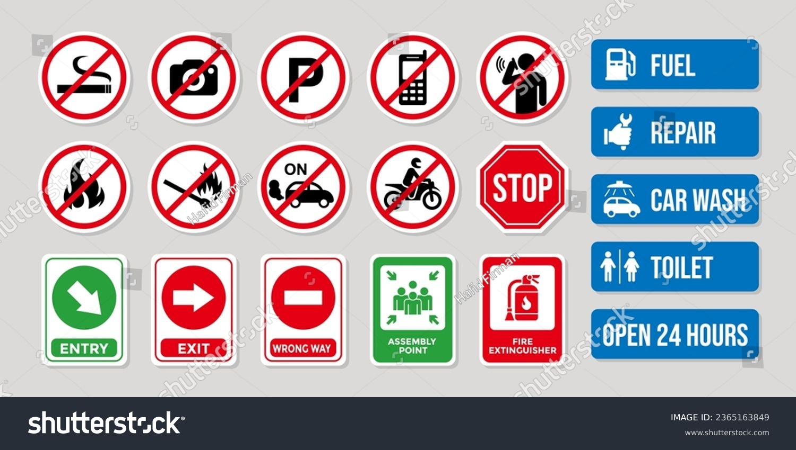

Safety Center
At Nans Online Fuel Services, safety is our top priority. We are committed to ensuring the safety of our customers, employees, and the environment. Our Safety Center provides valuable information and resources to promote safe practices when using our services.
Safety Tips
- Always follow proper fuel handling procedures.
- Keep fuel containers tightly closed and stored in a well-ventilated area.
- Never smoke or use open flames near fuel storage or refueling areas.
- Dispose of fuel containers and waste properly.
- Report any spills, leaks, or safety hazards immediately.
Emergency Procedures
In case of an emergency or accident involving fuel, follow these steps:
- Move away from the area and alert others to evacuate if necessary.
- Call emergency services (dial 911 or your local emergency number).
- If safe to do so, try to contain the spill or leak using absorbent materials.
- Do not attempt to clean up the spill unless trained to do so.
Safety Precautions

Always wear protective gear when handling fuel.
Keep fire extinguishers nearby in case of emergencies.
Contact us for more information about safety procedures or to report safety concerns.